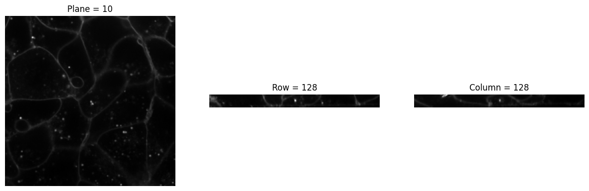
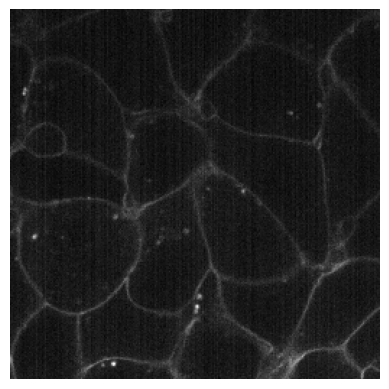
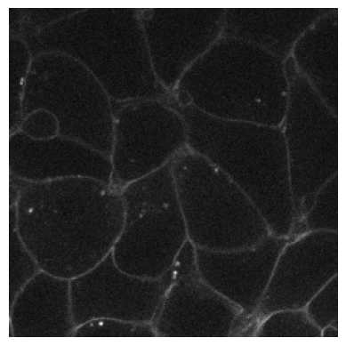
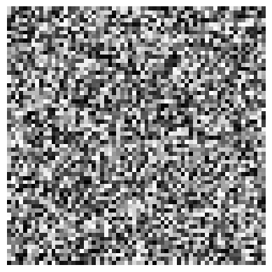
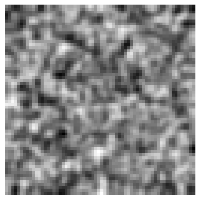
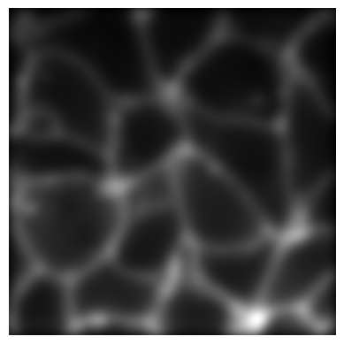

from bioMONAI.core import cells3d, img2Tensor
from bioMONAI.visualize import visualize_slicesTransforms
Data transformations and augmentations for 2D and 3D BioImages
Size & Sampling
Resample
def Resample(
sampling, # Sampling factor for isotropic resampling
kwargs:VAR_KEYWORD
):
A subclass of Spacing that handles image resampling based on specified sampling factors or voxel dimensions.
The Resample class inherits from Spacing and provides a flexible way to adjust the spacing (voxel size) of images by specifying either a sampling factor or explicitly providing new voxel dimensions.
img2Tensor(cells3d()[:,0])
Tensor2BioImage()(img2Tensor(cells3d()[:,0]))BioImageStack([[[0.0314, 0.0314, 0.0324, ..., 0.0654, 0.0624, 0.0622],
[0.0306, 0.0298, 0.0310, ..., 0.0639, 0.0571, 0.0610],
[0.0300, 0.0351, 0.0292, ..., 0.0634, 0.0681, 0.0618],
...,
[0.0169, 0.0178, 0.0174, ..., 0.0412, 0.0439, 0.0493],
[0.0177, 0.0163, 0.0172, ..., 0.0455, 0.0498, 0.0521],
[0.0148, 0.0171, 0.0172, ..., 0.0419, 0.0464, 0.0543]],
[[0.0275, 0.0315, 0.0313, ..., 0.0596, 0.0581, 0.0618],
[0.0286, 0.0293, 0.0306, ..., 0.0579, 0.0547, 0.0618],
[0.0306, 0.0298, 0.0311, ..., 0.0597, 0.0625, 0.0584],
...,
[0.0188, 0.0164, 0.0151, ..., 0.0258, 0.0314, 0.0307],
[0.0137, 0.0195, 0.0141, ..., 0.0287, 0.0333, 0.0323],
[0.0143, 0.0182, 0.0159, ..., 0.0304, 0.0269, 0.0295]],
[[0.0305, 0.0342, 0.0347, ..., 0.0563, 0.0589, 0.0569],
[0.0283, 0.0332, 0.0341, ..., 0.0618, 0.0594, 0.0602],
[0.0301, 0.0298, 0.0314, ..., 0.0570, 0.0615, 0.0566],
...,
[0.0166, 0.0173, 0.0177, ..., 0.0275, 0.0268, 0.0294],
[0.0159, 0.0157, 0.0159, ..., 0.0267, 0.0280, 0.0294],
[0.0171, 0.0183, 0.0183, ..., 0.0314, 0.0266, 0.0302]],
...,
[[0.0780, 0.0762, 0.0513, ..., 0.0347, 0.0349, 0.0357],
[0.0719, 0.0980, 0.0771, ..., 0.0374, 0.0370, 0.0359],
[0.0479, 0.0578, 0.0641, ..., 0.0330, 0.0368, 0.0368],
...,
[0.0180, 0.0198, 0.0191, ..., 0.0088, 0.0070, 0.0086],
[0.0202, 0.0201, 0.0202, ..., 0.0090, 0.0093, 0.0078],
[0.0193, 0.0205, 0.0205, ..., 0.0066, 0.0077, 0.0082]],
[[0.0637, 0.0640, 0.0493, ..., 0.0324, 0.0315, 0.0305],
[0.0615, 0.0738, 0.0580, ..., 0.0336, 0.0317, 0.0339],
[0.0449, 0.0491, 0.0477, ..., 0.0336, 0.0330, 0.0340],
...,
[0.0201, 0.0200, 0.0199, ..., 0.0101, 0.0063, 0.0076],
[0.0164, 0.0192, 0.0162, ..., 0.0088, 0.0081, 0.0080],
[0.0188, 0.0160, 0.0211, ..., 0.0073, 0.0049, 0.0093]],
[[0.0465, 0.0496, 0.0411, ..., 0.0285, 0.0308, 0.0287],
[0.0483, 0.0503, 0.0437, ..., 0.0297, 0.0323, 0.0313],
[0.0436, 0.0402, 0.0393, ..., 0.0282, 0.0310, 0.0291],
...,
[0.0211, 0.0174, 0.0163, ..., 0.0079, 0.0091, 0.0063],
[0.0176, 0.0187, 0.0199, ..., 0.0098, 0.0088, 0.0073],
[0.0154, 0.0178, 0.0195, ..., 0.0087, 0.0076, 0.0068]]])img = BioImageStack(img2Tensor(cells3d()[:,0]))
visualize_slices(img, showlines=False)
img2 = Resample(4)(img)
print(type(img2))
visualize_slices(img2, showlines=False)
img2 = Resample(4)(cells3d()[:,0])
print(type(img2))
visualize_slices(img2, showlines=False)
<class 'bioMONAI.data.BioImageStack'>
<class 'numpy.ndarray'>
Resize
def Resize(
size:NoneType=None, # Target dimensions for resizing (height, width). If its length is smaller than the spatial dimensions, values will be repeated. If an int is provided, it will be broadcast to all spatial dimensions.
kwargs:VAR_KEYWORD
):
A subclass of Reshape that handles image resizing based on specified target dimensions.
The Resize class inherits from Reshape and provides a flexible way to adjust the size of images by specifying either a target size or scaling factors.
print(img.size())
visualize_slices(img, showlines=False)
img2 = Resize(50)(img)
print(img2.size())
visualize_slices(img2, showlines=False)torch.Size([60, 256, 256])
torch.Size([60, 50, 50])
CropND
def CropND(
slices:list, # List of slice objects or tuples (start, end) for each dimension
dims:list=None, # List of dimensions to apply the slices. If None, slices are applied to all dimensions.
):
Crops an ND tensor along a specified dimension.
This transform crops an ND tensor along specified dimensions, which could be a channel or spatial dimension.
# Define the slices for cropping
slices = [(30, 50)]
# Create an instance of CropND
crop_transform = CropND(slices=slices)
img3 = crop_transform(img)
print(img3.size())
visualize_slices(img3, showlines=False)torch.Size([20, 256, 256])
# Define the slices for cropping
slices = [(30, 50), (0, 40)]
dims = [0, 2]
# Create an instance of CropND
crop_transform = CropND(slices=slices, dims=dims)
img3 = crop_transform(img)
print(img3.size())
visualize_slices(img3, showlines=False)torch.Size([20, 256, 40])
Noise
RandCameraNoise
def RandCameraNoise(
p:float=1.0, # Probability of applying Transform
damp:float=0.01, # Dampening factor to prevent saturation when adding noise
qe:float=0.7, # Quantum efficiency of the camera (0 to 1).
gain:int=2, # Camera gain factor. If an array, it should be broadcastable with input_image shape.
offset:int=100, # Camera offset in ADU. If an array, it should be broadcastable with input_image shape.
exp_time:float=0.1, # Exposure time in seconds.
dark_current:float=0.6, # Dark current per pixel in electrons/second.
readout:float=1.5, # Readout noise standard deviation in electrons.
bitdepth:int=16, # Bit depth of the camera output.
seed:int=42, # Seed for random number generator for reproducibility.
simulation:bool=False, # If True, assumes input_image is already in units of photons and does not convert from electrons.
camera:str='cmos', # Specifies the type of camera ('cmos' or any other). Used to add CMOS fixed pattern noise if 'cmos' is specified.
gain_variance:float=0.1, # Variance for the gain noise in CMOS cameras. Only applicable if camera type is 'cmos'.
offset_variance:int=5, # Variance for the offset noise in CMOS cameras. Only applicable if camera type is 'cmos'.
):
Simulates camera noise by adding Poisson shot noise, dark current noise, and optionally CMOS fixed pattern noise.
Returns: numpy.ndarray: The noisy image as a NumPy array with dimensions of input_image.
from bioMONAI.visualize import plot_imageimg3 = img[30]# Original clean image
plot_image(img3)
# Noisy image simulating a CMOS camera
plot_image(RandCameraNoise(camera = 'cmos').encodes(img3))
# Noisy image simulating a CCD camera
plot_image(RandCameraNoise(camera = 'ccd', readout=2).encodes(img3))
Blur
def Blur(
sigma:float=1.0, ksize:int=5, prob:float=0.5
):
Apply Gaussian blur to the image.
# Generate a random NumPy array
random_array = np.random.rand(64, 64)
# Apply Blur transform to the image
blur_transform = Blur(ksize=15, prob=1)
blurred_nparray = blur_transform(random_array)
# plot the original image
plot_image(random_array)
# Plot the blurred image
plot_image(blurred_nparray)

# Apply Blur transform to the image
blur_transform = Blur(sigma=5, prob=1.0)
blurred_img = blur_transform(img)
# plot the original image
plot_image(img)
# Plot the blurred image
plot_image(blurred_img)

Normalization
ScaleIntensity
def ScaleIntensity(
x, # The input image to scale.
min:float=0.0, # The minimum intensity value.
max:float=1.0, # The maximum intensity value.
axis:NoneType=None, # The axis or axes along which to compute the minimum and maximum values.
eps:float=1e-20, # A small value to prevent division by zero.
dtype:type=float32, # The data type to use for the output image.
):
Image normalization.
ScaleIntensityPercentiles
def ScaleIntensityPercentiles(
x, # The input image to scale.
pmin:int=3, # The minimum percentile value.
pmax:float=99.8, # The maximum percentile value.
axis:NoneType=None, # The axis or axes along which to compute the minimum and maximum values.
clip:bool=True, # If True, clips the output values to the specified range.
b_min:float=0.0, # The minimum intensity value.
b_max:float=1.0, # The maximum intensity value.
eps:float=1e-20, # A small value to prevent division by zero.
dtype:type=float32, # The data type to use for the output image.
):
Percentile-based image normalization.
ScaleIntensityVariance
def ScaleIntensityVariance(
target_variance:float=1.0, # The desired variance for the scaled intensities.
ndim:int=2, # Number of spatial dimensions in the image.
):
Scales the intensity variance of an ND image to a target value.
# Example usage with a random tensor of shape (1, 3, 256, 256)
rand_tensor = BioImageBase(torch.rand(1, 3, 256, 256))
transform = ScaleIntensityVariance(ndim=4)
# Apply the transform to the tensor
scaled_tensor = transform(rand_tensor)
print('Original Tensor Variance:', rand_tensor.var().item())
print('Scaled Tensor Variance:', scaled_tensor.var().item())Original Tensor Variance: 0.0834645926952362
Scaled Tensor Variance: 1.0Label Mapping
RelabelInstances
def RelabelInstances(
background:int=0, # Label considered background
dtype:type=int32, # Output dtype
):
Remap instance mask labels to consecutive integers.
Example: [0, 1, 3, 7, 18] → [0, 1, 2, 3, 4]
Data Augmentation
RandCrop2D
def RandCrop2D(
size:int | tuple, # Size to crop to, duplicated if one value is specified
lazy:bool=False, # a flag to indicate whether this transform should execute lazily or not. Defaults to False
kwargs:VAR_KEYWORD
):
Randomly crops a 2D image to a specified size.
This transform randomly crops a 2D image to a specified size during training and performs a center crop during validation.
RandCropND
def RandCropND(
size:int | tuple, # Size to crop to, duplicated if one value is specified
lazy:bool=False, # a flag to indicate whether this transform should execute lazily or not. Defaults to False
kwargs:VAR_KEYWORD
):
Randomly crops an ND image to a specified size.
This transform randomly crops an ND image to a specified size during training and performs a center crop during validation. It supports both 2D and 3D images and videos, assuming the first dimension is the batch dimension.
# Define a random tensor
orig_size = (65, 65)
rand_tensor = BioImageBase(torch.rand(8, *orig_size))
for i in range(100):
test_eq((8,64,64),RandCropND((64,64))(rand_tensor).shape)RandFlip
def RandFlip(
prob:float=0.1, # Probability of flipping
spatial_axis:NoneType=None, # Axes to flip. Default is None (random selection)
ndim:int=2, # Number of spatial dimensions
lazy:bool=False, # Flag for lazy execution (for BioImageBase)
kwargs:VAR_KEYWORD
):
Randomly flips an ND image over a specified axis. Works with both NumPy arrays and BioImageBase objects.
image = np.random.rand(1, 3, 3)
flip_transform = RandFlip(prob=1., ndim=2, spatial_axis=1)
flipped_image = flip_transform(image)
print('original:\n', image)
print('flipped:\n', flipped_image)
test_eq(image[0,0,0], flipped_image[0,2,0]) # Check if the image is flipped correctlyoriginal:
[[[0.29327178 0.94846294 0.10037941]
[0.25419657 0.47321989 0.05830957]
[0.99404835 0.23688037 0.76725071]]]
flipped:
[[[0.99404835 0.23688037 0.76725071]
[0.25419657 0.47321989 0.05830957]
[0.29327178 0.94846294 0.10037941]]]# Define a random tensor
orig_size = (1,4,4)
rand_tensor = BioImageBase(torch.rand(*orig_size))
print('orig tensor: ', rand_tensor, '\n')
for i in range(3):
print(RandFlip(prob=.75, spatial_axis=None)(rand_tensor))orig tensor: metatensor([[[0.3326, 0.2543, 0.4342, 0.3003],
[0.4832, 0.3760, 0.9370, 0.0354],
[0.4060, 0.4358, 0.3563, 0.2707],
[0.6497, 0.5397, 0.2840, 0.4219]]])
metatensor([[[0.4219, 0.2840, 0.5397, 0.6497],
[0.2707, 0.3563, 0.4358, 0.4060],
[0.0354, 0.9370, 0.3760, 0.4832],
[0.3003, 0.4342, 0.2543, 0.3326]]])
metatensor([[[0.3003, 0.4342, 0.2543, 0.3326],
[0.0354, 0.9370, 0.3760, 0.4832],
[0.2707, 0.3563, 0.4358, 0.4060],
[0.4219, 0.2840, 0.5397, 0.6497]]])
metatensor([[[0.3326, 0.2543, 0.4342, 0.3003],
[0.4832, 0.3760, 0.9370, 0.0354],
[0.4060, 0.4358, 0.3563, 0.2707],
[0.6497, 0.5397, 0.2840, 0.4219]]])RandRot90
def RandRot90(
prob:float=0.1, # Probability of rotating
k:int=1, # Number of times to rotate by 90 degrees. If k is None, it will be set randomly in `before_call`.
max_k:int=3, # Max number of times to rotate by 90 degrees
spatial_axes:tuple=(0, 1), # Spatial axes that define the plane around which to rotate. Default: (0, 1), this are the first two axis in spatial dimensions.
ndim:int=2, # Number of spatial dimensions
lazy:bool=False, # Flag to indicate whether this transform should execute lazily or not. Defaults to False
kwargs:VAR_KEYWORD
):
Randomly rotate an ND image by 90 degrees in the plane specified by axes.
# Define a random tensor
orig_size = (1,4,4)
rand_tensor = BioImageBase(torch.rand(*orig_size))
print('orig tensor: ', rand_tensor, '\n')
for i in range(3):
print(RandRot90(prob=1, k=i+1)(rand_tensor))orig tensor: metatensor([[[0.1693, 0.3898, 0.2731, 0.7344],
[0.9368, 0.3548, 0.9840, 0.4459],
[0.0521, 0.0972, 0.7799, 0.1550],
[0.2676, 0.0074, 0.5963, 0.2406]]])
metatensor([[[0.7344, 0.4459, 0.1550, 0.2406],
[0.2731, 0.9840, 0.7799, 0.5963],
[0.3898, 0.3548, 0.0972, 0.0074],
[0.1693, 0.9368, 0.0521, 0.2676]]])
metatensor([[[0.2406, 0.5963, 0.0074, 0.2676],
[0.1550, 0.7799, 0.0972, 0.0521],
[0.4459, 0.9840, 0.3548, 0.9368],
[0.7344, 0.2731, 0.3898, 0.1693]]])
metatensor([[[0.2676, 0.0521, 0.9368, 0.1693],
[0.0074, 0.0972, 0.3548, 0.3898],
[0.5963, 0.7799, 0.9840, 0.2731],
[0.2406, 0.1550, 0.4459, 0.7344]]])